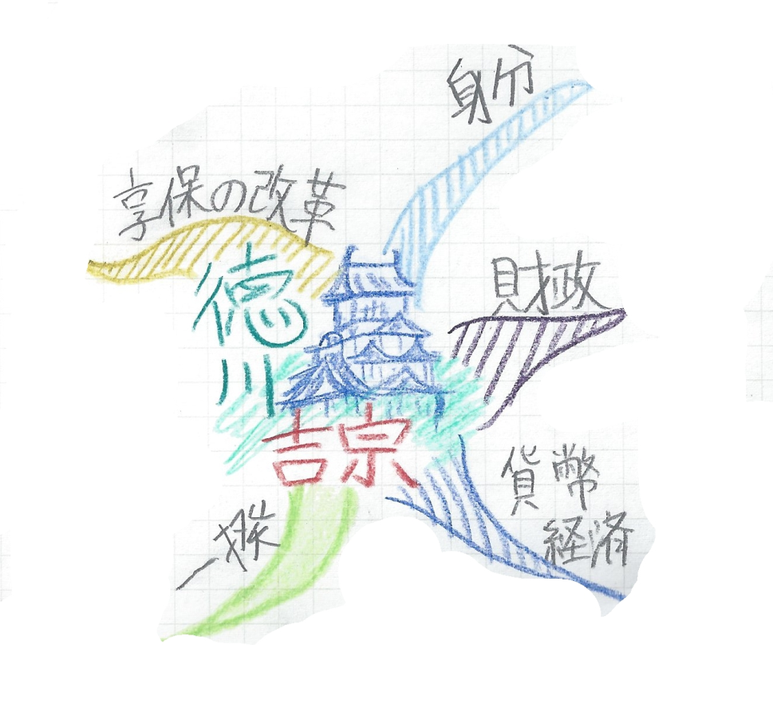
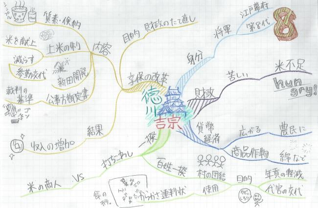
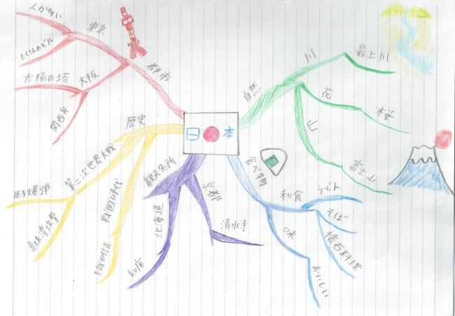
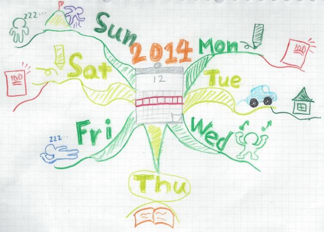
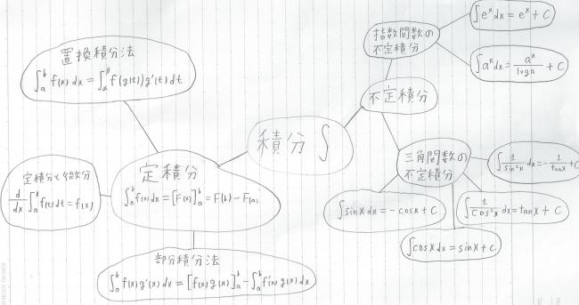
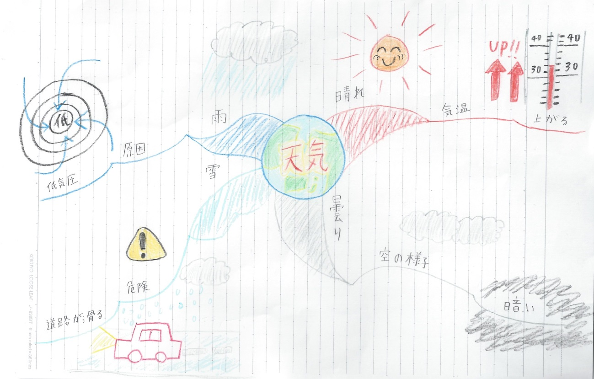

このページでは、マインドマップの実際の活用法について説明していきます。
マインドマップは、とても便利な思考ツールであり、様々な活用方法が有ります。
このページでは、
・講義内容のメモ
・グループでの話し合いで出た意見のまとめ
・予定表の作成
においての、マインドマップの活用例を示します。
また、マインドマップを作成するうえでの失敗例と改善例を紹介します。
講義内容のメモ
- 黒板の情報をまとめよう
-
ここでは応用編として、下の黒板に書いてある「徳川吉宗の時代」に関する情報をマインドマップとしてまとめる方法を考えてみましょう。 実際の授業では先生は黒板にマインドマップは描いてくれないので、この練習は効果があると思います。
◎享保の改革と社会変化
徳川吉宗→江戸幕府・第 8代将軍
・享保の改革
米の不足 → 財政難
1716年 享保の改革
財政の立て直し政策
1. 質素・倹約
2. 上米の制→「米を献上せよ!!」
参勤交代を減らした
3. 新田開発
4. 公事方御定書→裁判の基準
→収入の増加
・ 貨幣経済の広がり
農民に貨幣経済が広がった
→綿などの商品作物
・一揆
18世紀： 1. 百姓一揆
・村人の団結→年貢の軽減→代官の交代
2. 打ちこわし→米の商人に対して
さて、それではマインドマップの描き方のページで説明した通りの順番でマインドマップを描いていきましょう。
- 中心にテーマを描く!
-
まずは、中心にテーマを書きましょう。今回、黒板は徳川吉宗の時代について書いてあるので、中心のテーマは「徳川吉宗」あたりが適当でしょう。このような感じで、将軍にちなんで城の絵も描いてみました。マイマプ君も言っていましたが、何かしら絵を描くとあとで読み返すとき、「ああ、あの城の絵のマインドマップか」というように記憶の引き出しを簡単に開けることができると思います。
- カテゴリに分けて枝を伸ばす
-
つぎに、普通は中心テーマから連想できることを書くのですが、今回は黒板からマインドマップにするので、黒板に書いてあることをいくつかのカテゴリに分類します。
 - カテゴリごとに枝を伸ばす
-
最後に、カテゴリごとに枝を伸ばして内容を写していけば完成です。このように、マインドマップを使って板書の内容を書くと、そのまま板書の内容をノートに写すよりも、グループに分けられて見やすくなります！

グループでの話し合いで出た意見のまとめ
- 意見をまとめよう
-
学生のみなさんは、何か学内での活動に参加したことはないでしょうか。例えば、生徒会や学園祭、体育祭の実行委員に所属している方々は、それらの方針についての会議に参加されたことがあると思います。また、生徒会や実行委員会に入っていない方でも、例えば、グループ学習などでそれぞれの意見を出し合いまとめていくことは、経験したことがあると思います。
そのような場合に、全員分の意見をきれいにまとめることはとても大変なことです。まとめる時間が欲しくても、話し合いの進行を止めることはできませんし、かといって早くまとめようとすると、意見をとりこぼしてしまったり、後で見返した際に分かりづらくなってしまったりします。
しかし！
そんな時にもマインドマップはとても役に立ちます。以下に、グループでの話し合いをマインドマップでまとめた例を示します。
図に示すように、グループでの話し合いをまとめるときは、真ん中にその話題の中心となる事柄を書きます（図では、「日本」）。そして、出てきた意見をマインドマップの描き方に従って、鎖のようにつなげて書いていきます。こうすることで、図のように、意味上のグループで簡単に分けていく事ができ、後で見返した際に分かりやすくなるのです。
予定表の作成
- 予定表を作成しよう
-
習い事をしていたり、部活動に参加していたりする学生さんは予定表の作成をどのように行っているでしょうか。最近では、スマートフォンなどを使ってスケジュールの管理を行うこともあるようで、みなさんもそのような方法で予定をまとめているのではないでしょうか。あるいは、予定表を作ったことのない人もいるかもしれませんね。
実は、この予定表を作る際にもマインドマップは効果的です。予定表を普通に書いてしまうと量が多くなり、分かりづらくなったり、見にくくなったりしてしまうことがあります。しかし、マインドマップで予定表を作ると、さまざまな予定を数枚の紙にきれいにまとめることができ、また、予定の内容を明確に覚えておくことができるようになります。マインドマップで予定表を作った例を示します。
マインドマップで予定表を描く際には、まず、図に示すように、いつの予定、または、どんな予定であるかを真ん中に描きます（図では、12月の第2週目の予定について書いている）。そして、そのテーマに関する予定を、中心から鎖状につなげて描いていきます（図では、月曜日～金曜日の予定について書いている）。こうして描くことによって、その週や月の予定を1枚の紙にまとめることができ、後で見返しやすくなるのです。 このように、マインドマップは様々なことに使用することができます。みなさんもマインドマップ、使用してみてはいかがでしょうか？
失敗例と改善方法
- 初心者にありがちな間違え
-
マインドマップの描き方のページを見て、早速自分でも作ってみた人や、作ってみたいと思った人がいることだろうと思います。しかし、自分で実際に作ってみると、マインドマップの特徴を生かせていない、あるいは、体裁そのものが間違っていることがよくあります。
そこで、このページでは、マインドマップの失敗例を挙げて、その失敗例を改善するための方法を挙げていこうと思います。まず、1つ目の失敗例を以下の図に示します。
（これは、高校生で習う積分についてまとめたマインドマップです）さて、1つ目の失敗例を示しましたが、どこが間違っているか分かるでしょうか。多分、他のページで完成したマインドマップを見ている方は、このマインドマップに違和感を覚えると思います。 まず、上の図のマインドマップが失敗している理由の1つに、色を使っていないという点があります。マインドマップは基本的に様々な色を使い、生き生きとした印象を与える必要があります。そうしなければ、マインドマップに対する印象が薄くなってしまい、物事を記憶する際に、効率的ではなくなってしまいます。
失敗している理由の2つ目に、中心のテーマにイメージ（絵）がない、全体的にイメージをあまり使っていないという点があります。これも、上記の理由と同じで、印象が薄くなってしまい、マインドマップの内容を記憶しにくくなってしまうからです。だから、なるべくイメージはたくさん使って描いた方がいいです。むしろ、自分では多すぎると思うくらい描いてみてもいいかもしれません。イメージを置くということは、マインドマップではそれだけ重要な意味を持ちます。
失敗している理由の3つ目に、単語や式を円の中に描き、円と円とを線で結んで構成しているという点があります。基本的に、暗記する事項を示した文や式は、線上に書いていきます。円などの図形を使い、その中に文や式を書き込み、線で結んでいく方法は、原則的にいけません。イメージの強調として使う際は、より明確に、そしてその内容が強調されるように書く必要があります。上図のマインドマップように、全ての事柄に対し円を用いる場合は、強調になっていません。
失敗している理由の4つ目に、スペースが狭い、それぞれの要素の間隔の余白が少ないという点があります。上の図では、単語同士がほとんど余白がない状態で書かれているため、少々見づらくないっています。これも、記憶する際の印象の妨げになってしまうので、空間に余裕がでるように直す必要があります。
失敗している理由の5つ目に、中央ラインが細い、他の線と同じ大きさであるという点があります。中央に描かれる物事が中心の物事で、かつ重要な物事であるということを強調するために、中央から引かれる線は、なるべく太くする必要があります。
他にも応用的なことをいえばまだまだありますが、優先的に直すべき点はこの5点だと思います。この5点の失敗は、初めて描く際によくやってしまう間違いだと思います。しかし、マインドマップを描く上で、とても重要な5点なので、ぜひこのような失敗を見つけたら改善してください。
- 正しく見えても…
-
次に、2つ目の失敗例を以下に示します。
さて、この図のどこが失敗か分かるでしょうか。
一見、イメージをたくさん使っており、1つ目の失敗例のほとんどを克服したマインドマップで、正しいようにも見えますが、ある一点が気になります。それは、1つの単語から連想される言葉の数が少ないという点です。例えば、「晴れ」という言葉からは「気温」という言葉しか連想されておらず、また、その「気温」という言葉からも「上がる」という言葉しか連想されていません。
マインドマップでは、多くの言葉を連想させた方が、記憶力や創造力の向上につながるので、連想される言葉はできるだけ多く描いた方がいいのです。例えば、「晴れ」という言葉からは、「気温」という言葉以外にも、「原因」や「気持ち」といった言葉が連想されるので、それらの言葉も「気温」という言葉から鎖状につなげたほうがいいのです。